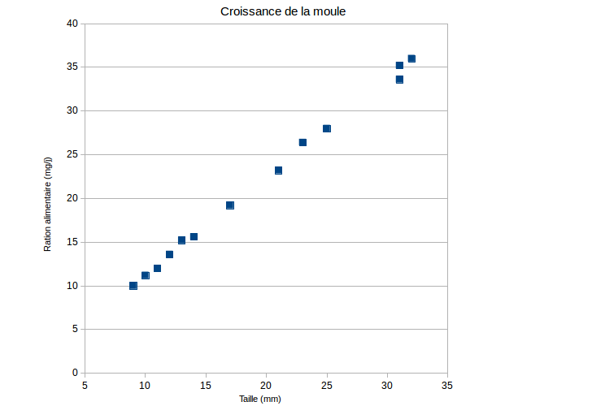
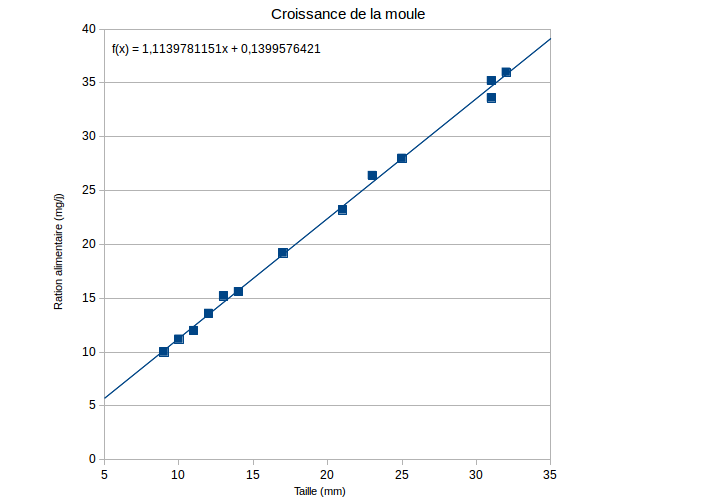
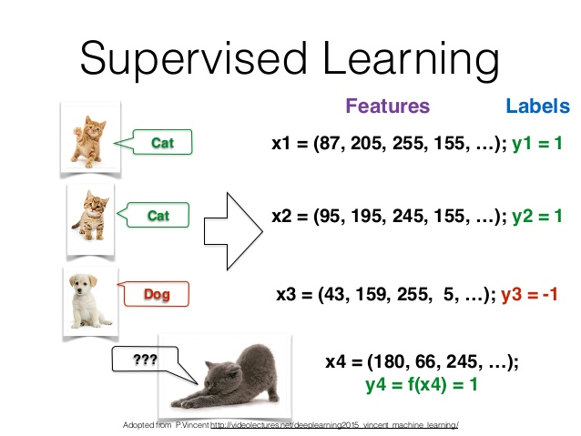

<!DOCTYPE html>
<html lang="en">
  <head>
    <meta charset="utf-8" />
    <meta name="viewport" content="width=device-width, initial-scale=1.0, maximum-scale=1.0, user-scalable=no" />

    <title>Apprentissage</title>
    <link rel="shortcut icon" href="./favicon.ico" />
    <link rel="stylesheet" href="./dist/reset.css" />
    <link rel="stylesheet" href="./dist/reveal.css" />
    <link rel="stylesheet" href="./_assets/theme/myblack.css" id="theme" />
    <link rel="stylesheet" href="./css/highlight/zenburn.css" />


  </head>
  <body>
    <div class="reveal">
      <div class="slides"><section ><section data-markdown><script type="text/template">

<head><style>
        .column5{ width: 50%; float:left;}
</style>
<style>
        .column3{ width: 30%; float:left;}
</style>
<style>
        .column7{ width: 70%; float:left;}
</style>
<style>
.table
{
    border-collapse: collapse;
}
</style>
<style>
  .td, .th /* Mettre une bordure sur les td ET les th */
{
  border: 1px solid white;
}
</style>
</head>

## - Intelligence Artificielle -
## Success story
### À quoi rèvent les programmes d'IA ?
#### LITIS - UFRST
[D. Olivier](http://litis.univ-lehavre.fr/~olivier/PagePerso)</script></section><section data-markdown><script type="text/template">## De moutons électriques ?
<!-- .element: style="width:300px" --></script></section><section data-markdown><script type="text/template"><!-- .element: class="strech"  style="width:1000px" --></script></section><section data-markdown><script type="text/template"><!-- .element: class="strech"  style="width:1000px" --></script></section></section><section ><section data-markdown><script type="text/template"># Liminaire</script></section><section data-markdown><script type="text/template">## De quoi va-t-on parler ?
* Contextualisation
  - Intelligence ?
  - Intelligence collective, sociale, en essaim ;
  - Intelligence Artificielle.
* Histoire de l'IA et ses promesses
* **Success story**<!-- .element: class="fragment highlight-current-blue" -->
  - IA, apprentissage (machine learning), apprentissage profond (deep learning) ;
  - Intelligence collective, Affective computing, vie artificielle .....
* **Discussion**

<aside class="notes"><p>Je n&#39;exposerai ici qu&#39;un point de vue personnel. Il n&#39;y a pas consensus, l&#39;histoire de l&#39;IA est encore trop récente pour que cela se fasse
et c&#39;est une discipline encore trop en évolution pour en fixer les limites. Néanmoins force est de constater quand on se retourne sur le passé
de l&#39;IA que de nombreuses annonces ont été faites et peu se son réalisées dans les délais prévus.</p>
</aside></script></section></section><section ><section data-markdown><script type="text/template"># Contextualisation</script></section><section data-markdown><script type="text/template">## Intelligence - expertise
<div class="column5">
  
</div>
<div class="column5">
  <ul>
    <li>Résolution de problème - Capacité à atteindre différents objectifs ;</li>
    <li>Ensemble d'expertise dans un grand nombre de domaine ;</li>
    <li>Capacité à acquérir une expertise .... apprentissage du savoir et du savoir faire, adaptabilité.</li>
</div>

<aside class="notes"><ul>
<li>Il n&#39;y a pas d&#39;échelle linéaire de l&#39;intelligence, c&#39;est un espace à n dimensions. J&#39;ai choisi la toile d&#39;araignée pour représenter cela
et les fils radiaux sont les axes de l&#39;expertise, plus ils sont longs plus on est expert d&#39;eun certaine façon. L&#39;inconvénient de cette représentation
est le coté discret alors que c&#39;est continu.</li>
<li>Certains objectifs sont atemporel et non lié sur une accumulation de connaissance (ondes gravitationnelles), d&#39;autres le sont.</li>
<li>Puis je être un expert sur l&#39;exploration de mars en trant qu&#39;individu ? NON Il nous faut être un superindividu !</li>
</ul>
</aside></script></section><section data-markdown><script type="text/template">## Intelligence collective, sociale, en essaim
<div class="column5">
  
</div>
<div class="column5">
  
</div>

<aside class="notes"><ul>
<li>émergence du langage, de l&#39;écrit, de l&#39;imprimerie, la technologie, un réseau d&#39;interaction planétaire</li>
<li>Intelligence augmentée - Robot exploration de mars</li>
<li>en parallèle la nature développe sur des temps long des stratégies semblable.</li>
<li>La conquête de la Lune, les ondes gravitationnelles ......</li>
<li>Le chasseur cueilleur du paléolithique 50 000 ans avant notre ère.</li>
</ul>
</aside></script></section></section><section ><section data-markdown><script type="text/template"># Apprentissage(s)</script></section><section data-markdown><script type="text/template">## Positionnement par rapport à l'IA
</script></section><section data-markdown><script type="text/template">## Trois grandes orientations dans l'apprentissage automatique
<!-- .element: style="width:600px;background-color:white;" --></script></section><section data-markdown><script type="text/template">## Trois grandes orientations dans l'apprentissage automatique
* Apprentissage supervisé
  - On entraine le programme à partir d'une base de données d'apprentissage contenant des « exemples ». Ces exemples sont des cas identifiés et validés.
* Apprentissage non supervisé prédictif
  - On cherche à regrouper des données entre-elles.
* Apprentissage par renforcement
  - Apprendre par interaction avec l’environnement et en observant le résultat de certaines actions. D'une certaine façon, il s'agit d'_apprendre à apprendre_.

<aside class="notes"><ul>
<li><em><strong>L&#39;apprentissage supervisé</strong></em> - C&#39;est une technique automatique qui consiste à entrainer le réseau de neurones à partir d&#39;une base de données d&#39;apprentissage contenant des « exemples ». Ces exemples sont des cas identifiés et validés. A partir de la base de données d&#39;apprentissage $\cal{D}_n = { (x_1, y_1), ... (x_n,y_n)}$, on cherche à inférer la relation entre $x$ et $y$. Imaginons que vous vouliez reconnaître des chats sur des dessins. Durant la phase d&#39;apprentissage vous allez présenter des dessins sur lesquels figurent des chats. Le réseau va déterminer une
sortie et ensuite on compare cette dernière avec la réponse &quot;correcte&quot; et on effectue des corrections dans le réseau si besoin. L’extraction des données est donc prédictive.</li>
<li><em><strong>L&#39;apprentissage non supervisé</strong></em> - C&#39;est une technique utilisée lorsqu&#39;il n&#39;y a pas de jeu de données avec des réponses connues. Les algorithmes d’apprentissage ne permettent pas de faire des prédictions ils servent à partitionner des données en groupes homogènes. On parle souvent de <em><strong>clustering</strong></em> de données à leur sujet. Ils servent donc à regrouper des données et détecter par exemple des éléments anormaux, ou faire de la réduction de dimension. A partir d&#39;un échantillon d&#39;apprentissage $\cal{D}_n = {x_1, ... , x_n} \subset \cal{X}$, on cherche à partionner $\cal{X}$ en classes pertinentes. On peut par exemple à partir d&#39;un fichier de log essayer de déterminer
des intrusions. L&#39;extraction des données est descriptive.</li>
<li><em><strong>L&#39;apprentissage par renforcement</strong></em> - C&#39;est une technique qui consiste à apprendre par interaction avec l’environnement et, en observant le résultat de certaines actions. D&#39;une certaine façon, il s&#39;agit <em>d&#39;apprendre à apprendre</em>. Le réseau de neurone permet de prendre une décision et l&#39;environnment en retour évalue cette décision, si elle est mauvaise, le réseau adapte ses pondérations afin de prendre une décision différente la prochaine fois. Nous utilisons quotidiennement ce processus cognitif qui est à la base de l&#39;adaptabilité.
Les capacités des réseaux de neurones à apprendre et à être adaptatif expliquent leurs succès dans le domaine de l&#39;IA.</li>
</ul>
</aside></script></section><section data-markdown><script type="text/template">## Apprentissage supervisé
### Histoire de moules
<div class="column3" style="font-size:70%">
<TABLE BORDER>
	<TR>
		<TH>Ration alimentaire (mg/j)</TH> <TH>Taille de la moule (mm)</TH>
	</TR>
	<TR>
  <td>10</td>	<td>11,2</td>
  </TR>
<tr>
<td>17</td>	<td>19,2</td>
</TR>
<tr>
<td>14</td>	<td>15,6</td>
</TR>
<tr>
<td>9</td>	<td>10</td>
</TR>
<tr>
<td>21</td>	<td>23,2</td>
</TR>
<tr>
<td>25</td>	<td>28</td>
</TR>
<tr>
<td>31</td>	<td>33,6</td>
</TR>
<tr>
<td>12</td>	<td>13,6</td>
</TR>
<tr>
<td>23</td>	<td>26,4</td>
</TR>
<tr>
<td>32</td>	<td>36</td>
</TR>
<tr>
<td>31</td>	<td>35,2</td>
</TR>
<tr>
<td>11</td>	<td>12</td>
</TR>
<tr>
<td>13</td>	<td>15,2</td>
	</TR>
</TABLE>
</div>
<div class="column7" style="font-size:70%">
  <br>
</div></script></section><section data-markdown><script type="text/template">## Apprentissage supervisé
### Histoire de moules
<div class="column3" style="font-size:70%">
<TABLE BORDER>
	<TR>
		<TH>Ration alimentaire (mg/j)</TH> <TH>Taille de la moule (mm)</TH>
	</TR>
	<TR>
  <td>10</td>	<td>11,2</td>
  </TR>
<tr>
<td>17</td>	<td>19,2</td>
</TR>
<tr>
<td>14</td>	<td>15,6</td>
</TR>
<tr>
<td>9</td>	<td>10</td>
</TR>
<tr>
<td>21</td>	<td>23,2</td>
</TR>
<tr>
<td>25</td>	<td>28</td>
</TR>
<tr>
<td>31</td>	<td>33,6</td>
</TR>
<tr>
<td>12</td>	<td>13,6</td>
</TR>
<tr>
<td>23</td>	<td>26,4</td>
</TR>
<tr>
<td>32</td>	<td>36</td>
</TR>
<tr>
<td>31</td>	<td>35,2</td>
</TR>
<tr>
<td>11</td>	<td>12</td>
</TR>
<tr>
<td>13</td>	<td>15,2</td>
	</TR>
</TABLE>
</div>
<div class="column7" style="font-size:70%">
  <br>
</div>

<aside class="notes"><p>Quand vous avez fait cela vous avez un modèle prédictif. Si on regarde on cherche à déterminer deux boutons (parmètres) la pente $a$ et la valeur $b$ à l&#39;origine.
On peut imaginer un programme qui fasse varier ces boutons jusqu&#39;à trouver la droite.</p>
</aside></script></section><section data-markdown><script type="text/template">## Apprentissage supervisé
x  |  y
--|--
$x_0$  | $y_0$
...  |  ...

* Une donnée $x$ et on cherche le lien avec $y$ en jouant sur les boutons
  - $\Rightarrow$ Phase d'apprentissage ;
* On fait ensuite des prédictions (apprentissage supervisé);
* Problème très simple !
  - Les relations sont plus compliquées en général, et il y a beaucoup plus de paramètres en entrée.</script></section><section data-markdown><script type="text/template">## Apprentissage supervisé

### Réseau de neurones
<!-- .element: style="width:600px;background-color:white;" --></script></section><section data-markdown><script type="text/template">## Apprentissage supervisé
### Histoire de chats


<aside class="notes"><p>Introduction de caractéristiques.....</p>
</aside></script></section></section><section ><section data-markdown><script type="text/template">## Apprentissage non supervisé
* Tous les paramètres sont considérés de la même façon ;
* On cherche comment elles se répartissent dans l'espace des paramètres.
* On cherche à dire des choses sur $p(X)$ la densité de probabilité des variables $X$
  * En supervisé sur $p(Y|X)$, proba de $Y$ sachant $X$.</script></section><section data-markdown><script type="text/template">## Apprentissage non supervisé
### Répartition
<!-- .element: style="width:600px;background-color:white;" --></script></section><section data-markdown><script type="text/template">## Apprentissage non supervisé
### Répartition
<!-- .element: style="width:550px;background-color:white;" --></script></section><section data-markdown><script type="text/template">## Apprentissage non supervisé
### Big brother is looking me
</script></section><section data-markdown><script type="text/template">## Vers l'apprentissage profond
### Le problème
<div class="column5" style="font-size:70%">
<br>
</div>
<div class="column5" style="font-size:100%">
  <ul>
    <li>Vous prenez un chat de 500x500 pixels</li>
      <ul>
        <li>Cela fait 250 000 entrées .....</li>
        <li>Euh là ... on ne va pas réussir à entrainer le réseau !</li>
        <li>Une idée ?</li>
        <li class="fragment">Réduire la dimension, aggréger des variables.
      </ul>
  </ul>
</div></script></section><section data-markdown><script type="text/template">## Vers l'apprentissage profond
### Une idée
<div class="column5" style="font-size:100%">
  <ul>
    <li> Extraire des caractéristiques de l'image ....</li>
      <UL>
          <LI> Couleurs, histogrammes ;</li>
          <li> Contours ;</li>
          <li> Dimensions ;</li>
          <li> Rapports ....</li>
      </ul>
  </ul>
  </div>
  <div class="column5" style="font-size:70%">
    <br>
  </div></script></section><section data-markdown><script type="text/template">## Vers l'apprentissage profond
### Extraction de caractéristiques

* Abstraction de l'image d'un million de pixels à quelques centaines de caractéristiques.
* La qualité dépend .... des choix $\Rightarrow$ l'intelligence est ici !</script></section><section data-markdown><script type="text/template">## Vers l'apprentissage profond
### Résultats
<!-- .element: style="width:800px;background-color:white;" --></script></section><section data-markdown><script type="text/template">## Apprentissage profond
<!-- .element: style="width:800px;background-color:white;" --></script></section><section data-markdown><script type="text/template">## Apprentissage profond
### Idée folle
)<!-- .element: style="width:500px;background-color:white;" -->
* Année 90 suppression de la phase d'abstraction.</script></section><section data-markdown><script type="text/template">## Apprentissage profond
### Compétition
* Large scale visualisation challenge

2010 | résultat (Tx d'échecs)
--- | ---
NEC | 28%
XRCE | 34%
ISI  | 45%
UCI  | 47%
Hminmax | 54%</script></section><section data-markdown><script type="text/template">## Apprentissage profond
### Compétition
* Large scale visualisation challenge

2011 | résultats
--- | ---
XRCE | 26%
Uv A | 31%
ISI  | 36%
NII  | 50%</script></section><section data-markdown><script type="text/template">## Apprentissage profond
### Compétition
* Large scale visualisation challenge

2012 | résultats
--- | ---
Supervision<!-- .element: class="fragment highlight-current-blue" --> | 16%
ISI | 26%
VGG | 27%
XRCE | 27%
Uv A | 30 %</script></section><section data-markdown><script type="text/template">## Apprentissage profond
### Compétition
* Large scale visualisation challenge
### 2013 Tout le monde fait du deep-learning</script></section><section data-markdown><script type="text/template">## Apprentissage profond
### Raison du succès

* Le matériel

<!-- .element: style="width:500px;background-color:white;" --></script></section><section data-markdown><script type="text/template">## Apprentissage profond
### Raison du succès

<iframe style="float:center;width:800px;height:500px" data-src="http://www.image-net.org/"></iframe></script></section><section data-markdown><script type="text/template">## Apprentissage profond et par renforcement
### AlphaGo, alphaGo Zero, alpha Zero
</script></section></section><section ><section data-markdown><script type="text/template"># Intelligence artificielle distribuée</script></section><section data-markdown><script type="text/template">## Intelligence artificielle distribuée
</script></section><section data-markdown><script type="text/template">## Intelligence collective
* Basée sur l'interaction
* L'auto-organisaction
* Recherche d'émergence
* Adaptation</script></section><section data-markdown><script type="text/template">## Intelligence collective
### Intelligence en essaim
</script></section><section data-markdown><script type="text/template">## Intelligence collective
### Intelligence en essaim
<!-- .element: style="width:700px;background-color:white;" --></script></section></section><section ><section data-markdown><script type="text/template"># Affective computing - Informatique affective</script></section><section data-markdown><script type="text/template">## Des émotions
* Rosalind Picard
</script></section><section data-markdown><script type="text/template">## Pourquoi ?
* Détection ;
* Empathie ;
* Domaines
   * Interface homme-machine ;
   * Gestion comportementale : évacuation, marketing, EAO ...
   * Méthode de résolution ;
* Utilisé en IA et IAD.</script></section></section><section ><section data-markdown><script type="text/template"># Vie Artificielle</script></section><section data-markdown><script type="text/template">## Définition

> La vie artificielle est donc l'étude de systèmes vivants naturels pour en trouver des principes afin de recréer sur des supports artificiels des phénomènes biologiques à partir de rien.
>> C. Langton, 1987.</script></section><section data-markdown><script type="text/template">## La vision de Von-Neumann

>Les êtres vivants sont des agrégats compliqués de composants simples et, selon toute théorie probabiliste ou thermodynamique raisonnable, ils sont très improbables. La seule chose qui explique ou atténue ce miracle est le fait qu’ils se reproduisent : si, par accident, il en apparaît un seul, alors les principes des probabilités ne s’appliquent plus et il s’en produit beaucoup.
>> John von Neumann, Theory of Self-Reproducing Automata, 1966.</script></section><section data-markdown><script type="text/template">## L'émergence des automates
* Dès 1940
* Machines autoréplicatrices, trop difficile $\rightarrow$ automate auto réplicateur.
</script></section><section data-markdown><script type="text/template">## La boucle est bouclée
<iframe width="800" height="450" src="https://www.youtube.com/embed/BxAfsacJFuw" frameborder="0" allow="autoplay; encrypted-media" allowfullscreen></iframe>
<aside class="notes"><p>On termine sur Von Neuman, un des pères de l&#39;informatique et sur une boucle de Langton automate auto-réplicateur.</p>
</aside></script></section></section><section ><section data-markdown><script type="text/template"># Discussion - Questions</script></section><section data-markdown><script type="text/template">## L'IA demain
### Le rapport Villani
* Les données point de départ de toute stratégie en IA ;
  - Communs de la données.
* Quatre secteurs stratégiques ;
  - Santé, environnement, transport-mobilités et defense-sécurité.
* Création de 3IA - zones franches de l'IA.</script></section><section data-markdown><script type="text/template">## L'IA demain
### Le rapport Villani
* IA verte ;<!-- .element: style="color:green" -->
* Penser l'éthique.</script></section><section data-markdown><script type="text/template">## Prédictions - prophéties

* L'IA a déjà connu des périodes d'euphories, puis des hivers ...
* Les systèmes que nous avons sont certes très performants mais non génèralistes.
* L'intelligence collective des IA, les fourmis et les abeilles font mieux.
  - Bon d'accord 168 millions d'année face à 60 ans.
* Il faut mener une réflexion éthique avec les avancées
  - Nucléaire, bio-éthique, pollution ....</script></section><section data-markdown><script type="text/template">## Prédictions - prophéties
### Des échecs encore
</script></section><section data-markdown><script type="text/template">## Prédictions - prophéties
### Votre prochain défi
<!-- .element: style="height:500px;background-color:white;" -->

<aside class="notes"><ul>
<li>1 Simpson</li>
<li>2 Tortue Ninja</li>
<li>3 South park</li>
<li>4 Les stroumphs</li>
<li>5 Astérix, Obelix</li>
<li>6</li>
<li>7 Donald et ses neveux</li>
<li>8 Dalton Lucky-Luke</li>
</ul>
</aside></script></section></section></div>
    </div>

    <script src="./dist/reveal.js"></script>

    <script src="./plugin/markdown/markdown.js"></script>
    <script src="./plugin/highlight/highlight.js"></script>
    <script src="./plugin/zoom/zoom.js"></script>
    <script src="./plugin/notes/notes.js"></script>
    <script src="./plugin/math/math.js"></script>
    <script>
      function extend() {
        var target = {};
        for (var i = 0; i < arguments.length; i++) {
          var source = arguments[i];
          for (var key in source) {
            if (source.hasOwnProperty(key)) {
              target[key] = source[key];
            }
          }
        }
        return target;
      }

      // default options to init reveal.js
      var defaultOptions = {
        controls: true,
        progress: true,
        history: true,
        center: true,
        transition: 'default', // none/fade/slide/convex/concave/zoom
        plugins: [
          RevealMarkdown,
          RevealHighlight,
          RevealZoom,
          RevealNotes,
          RevealMath
        ]
      };

      // options from URL query string
      var queryOptions = Reveal().getQueryHash() || {};

      var options = extend(defaultOptions, {}, queryOptions);
    </script>


    <script>
      Reveal.initialize(options);
    </script>
  </body>
</html>
